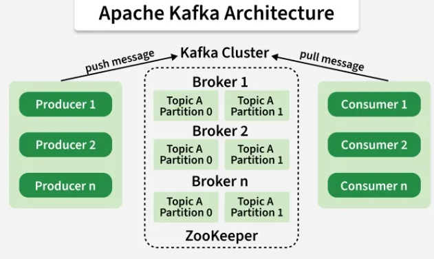

Apache Kafka
Что это
Apache Kafka - это высокопроизводительная система обмена сообщениями для публикации-подписки, реализованная как
распределенная, разделенная, реплицированная служба журнала фиксации. ZooKeeper - для работы с Kafka необходим
координатор. Поэтому вначале стартуем ZooKeeper, затем сервер Kafka.
Для чего
- Проверка сообщения на ошибки.
- Маршрутизация конкретному приемнику(ам).
- Разбиение сообщения на несколько маленьких, а затем агрегирование ответов приёмников и отправка
результата источнику.
- Сохранение сообщений в базе данных.
- Вызов веб-сервисов.
- Распространение сообщений подписчикам, если используются шаблоны типа издатель-подписчик.
Преимущества
- Скорость - один брокер Kafka может обрабатывать сотни мегабайт от чтения и записи в секунду от тысяч
клиентов.
- Масштабируемость - kafka спроектирован таким образом, чтобы один кластер мог служить центральной базой
данных для крупной организации. Он может быть эластично и прозрачно расширен без простоя. Потоки данных
разделяются и распределяются по кластеру машин, чтобы потоки данных превышали возможности любой отдельной
машины и позволяли кластерам скоординированных потребителей.
- Долговечный - сообщения сохраняются на диске и реплицируются внутри кластера, чтобы предотвратить
потерю данных. Каждый брокер может обрабатывать терабайты сообщений без влияния на производительность.
- Распространяется по дизайну - kafka имеет современную кластер-ориентированную конструкцию, которая
обеспечивает надежную прочность и отказоустойчивость.
- Подходит для stream processing и event-driven архитектуры.
Setting
- log.retention.hours - время через сколько будут удаленны данные добавленные в kafka.
По умолчанию одна неделя.
- log.retention.minutes - время через сколько будут удаленны данные добавленные в kafka. По умолчанию
одна неделя.
- log.retention.ms - время через сколько будут удаленны данные добавленные в kafka. По умолчанию одна
неделя.
- log.retention.bytes - объем данный после которого будут удаленны данные добавленные в kafka.
По умолчанию 1 Gb. Значение -1 отключает ограничения.
- offsets.retention.minutes - время через которое kafka забудет какой офсет был брокером.

Common kafka entities
- Kafka cluster - логическое объединение Kafka Brokers под управлением ZooKeeper.
- Zookeeper - менеджер для управления Kafka cluster. Управляет информацией о Brokers, Topics, Users etc.
- Kraft - новая замена Zookeeper.
- Producer - продюсер загружающий данные в kafka топик.
- Consumer - потребитель забирающий данные из kafka топика.
- Broker - сервер kafka который сохраняет данные и обрабатывает записи. Одна единица Kafka.
- Topic - раздел в Broker с конкретным типом данных. Аналог таблицы в SQL.
- Partition - раздел в Topic для параллельной обработки. Нет ограничение на количество, но он требует
ресурсы и рекомендуется не больше 5000. Желательно иметь столько же consumers. Один Partition может
обслуживать только одного Consumer. Выбор partition происходит по Partition Key.
- Key - опциональная часть данных задающаяся producer, по которому определяется Partition(если задана
функция партиционирования). Можно использовать его hash для выбора Partition или в случае ошибки по
ключу определить в каком offset ошибка.
- offset - уникальный порядковый номер(long) в partition(не глобальный) для каждого сообщения.
Присваивается kafka автоматически. Consumer используют их для "offset pointer".
- Value - значение, которое храниться по ключу.
- offset pointer - это указатель (позиция), который показывает какое сообщение в топике уже прочитал consumer.
Может храниться в: 1) В самой Kafka (обычный вариант) в специальном топике- __consumer_offsets. 2)
Внешнее хранилище:database, Redis, Zookeeper(старые версии).
- Consumer group - один offset pointer для группы consumers.
- Для нескольких consumers(для разделение нагрузки).
- Позволяет нескольким сервисам читать один и тот же топик.
- Replication factor - разделение partition на реплики.
Partition и Consumer
Если 5 Partitions и 10 Consumers
Один Partition может обслуживать только одного Consumer. Если больше Consumers они будут простаивать.
Если 10 Partitions и 5 Consumers
Каждый Consumer обрабатывает 2 Partitions
Подключение
При первом запросе на kafka broker, всегда будет возвращаться список ip и ports всех kafka brokers в Kafka
cluster. Со второго вопроса начнется работа обмена данными.
Программы для мониторинга
- Kafka Tool
- KafkaCat
Ключ
Если 2 сообщения с одним ключем - будет добавлено 2 записи в один partition.
Kafka использует hash(key) % number_of_partitions для определения Partition.
Kafka транзакции в Spring Boot
Что гарантируют Kafka транзакции:
- Атомарную публикацию в несколько топиков (все сообщения видны или ни одно).
- Связывание read → process → write в одну операцию для консьюмеров-продюсеров.
Что НЕ гарантируют:
- Откат изменений во внешних системах (БД, API, email).
- Защиту от дубликатов, если downstream-сервисы не настроены правильно.
Конфигурация продюсера
propertiesspring.kafka.producer.properties.enable.idempotence=true
spring.kafka.producer.properties.transactional.id=order-service-${random.value}-
Конфигурация консьюмера
propertiesspring.kafka.consumer.isolation-level=read_committed
Добавляем TransactionManager
.
@Bean
public KafkaTransactionManager<String, Object> kafkaTransactionManager(
ProducerFactory<String, Object> producerFactory
) {
return new KafkaTransactionManager<>(producerFactory);
}
Используем @Transactional
@Transactional
public void publishOrderResult(OrderRequest request) {
String orderId = UUID.randomUUID().toString();
OrderPlacedEvent event = new OrderPlacedEvent(
orderId,
request.email(),
request.productName()
);
kafkaTemplate.send("order-placed", orderId, event);
kafkaTemplate.send("order-audit", orderId, event);
// Обе отправки атомарны — либо обе успешны, либо обе откатятся
}
Важно: если в приложении есть и Kafka и JPA TransactionManager:
Вариант 1 — пометить как @Primary:
@Primary
@Bean
public KafkaTransactionManager<String, Object> kafkaTransactionManager(...) {...}
Вариант 2 — явно указать:
@Transactional("kafkaTransactionManager")
public void publishOrderResult(...) {...}
В большинстве систем дедупликация и идемпотентность — более простое и эффективное решение.